Here, we introduce the recent activities and updates of the Kenji Tanaka Laboratory along with various photographs in a monthly news format!
[Notice]
- The Kyushu University Chikushi Campus Open Campus will be held on Saturday, May 23, 2026. Please drop by our booth!
- The video of our press release on June 10, 2024, titled "Discovery of a New Turbulence Transition in Fusion Plasma - Establishing an Innovative Operation Scenario for Fusion Reactors -" is available on YouTube here. Please check it out!
[April 2026]
- Mr. Koki Sumida joined our laboratory as a Master's program student.
[March 2026]
- Mr. Yoshihara successfully completed his Master's program degree.
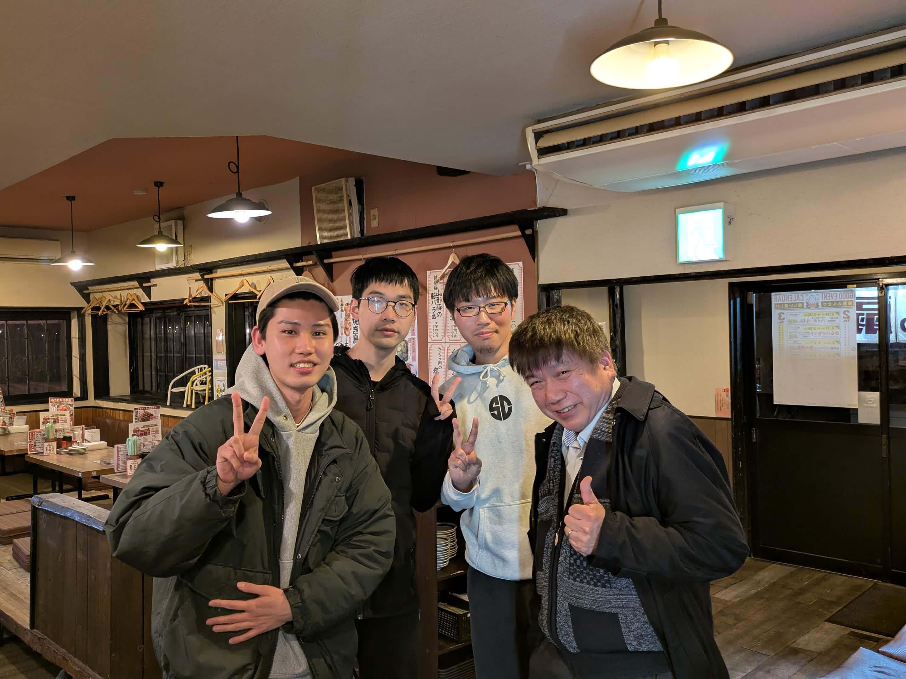
- Mr. Okuwada (M1) presented a poster at the 28th Plasma Workshop for Young Scientists.
- Mr. Jin (D1) gave an oral presentation at the 73rd Japan Society of Applied Physics (JSAP) Spring Meeting.
[February 2026]
- Mr. Yoshihara (M2) successfully presented his research at the Master's thesis defense.
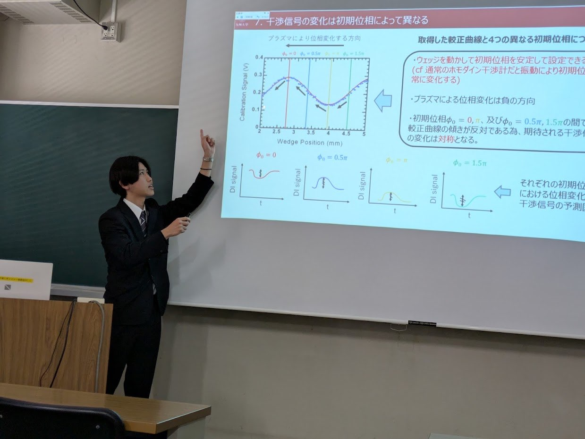
[January 2026]
- Prof. Tanaka gave an oral presentation at the Laser Society of Japan Annual Meeting.
- Mr. Okuwada (M1) presented a poster at the Confinement and Transport Task Force Workshop.
[December 2025]
On December 25, the Large Helical Device (LHD) experimental program concluded its final plasma operation. For approximately 28 years since March 31, 1998, the LHD successfully conducted cutting-edge plasma operations. The Tanaka Laboratory mainly took charge of operating and maintaining the high-power $\text{CO}_2$ laser diagnostic systems throughout this long history. Moving forward, we will focus extensively on analyzing the massive amounts of accumulated experimental data and dedicate our efforts to developing next-generation diagnostics for future devices.

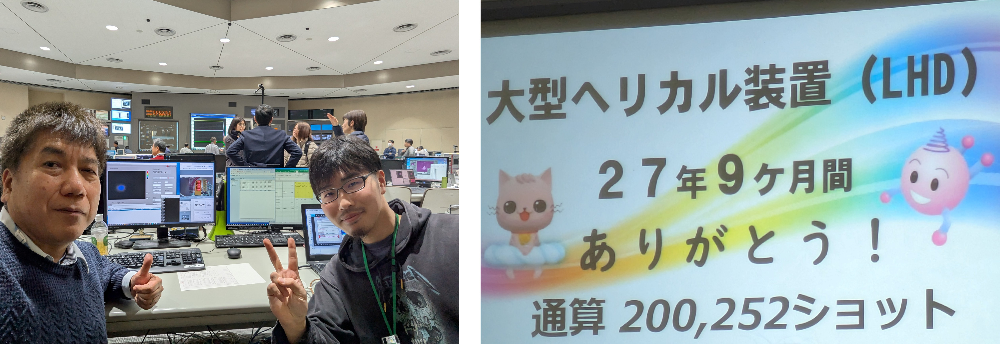
- Mr. Yoshihara (M2) presented a poster at the Japan Society of Plasma Science and Nuclear Fusion Research (JSPF) Annual Meeting.
[October 2025]
Prof. Tanaka and Dr. Toshiki Kinoshita (Assistant Professor at Kyushu University) presented their latest achievements at the 30th IAEA Fusion Energy Conference (FEC2025). Prof. Tanaka delivered an Overview talk titled "RECENT ADVANCES IN PLASMA CONTROL AND PHYSICS RESEARCH IN THE LARGE HELICAL DEVICE," and Dr. Kinoshita gave an oral presentation titled "DIRECT CONTROL OF TURBULENCE FOR IMPROVED PLASMA CONFINEMENT."
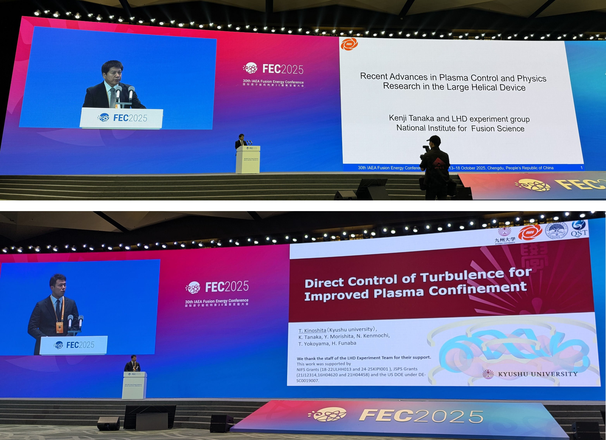
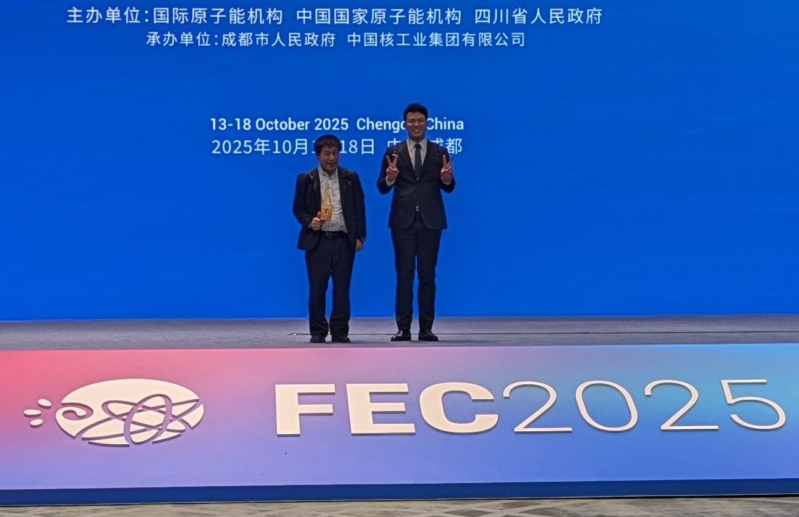
[September 2025]
- The LHD 26th experimental cycle has officially commenced.
[April 2025]
- Mr. Hikaru Okuwada joined our laboratory as a Master's program student.
[February 2025]
- Mr. Sakai (D3) successfully presented his research at his Ph.D. dissertation defense hearing.
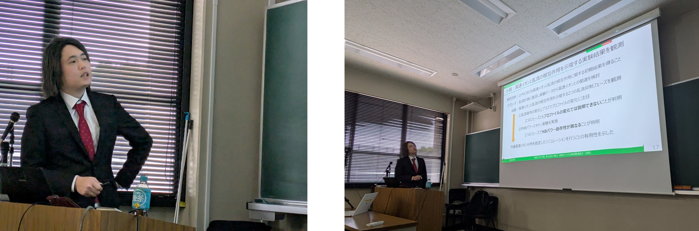
- Mr. Yokomizo (M2) successfully presented his research at the Master's thesis defense.
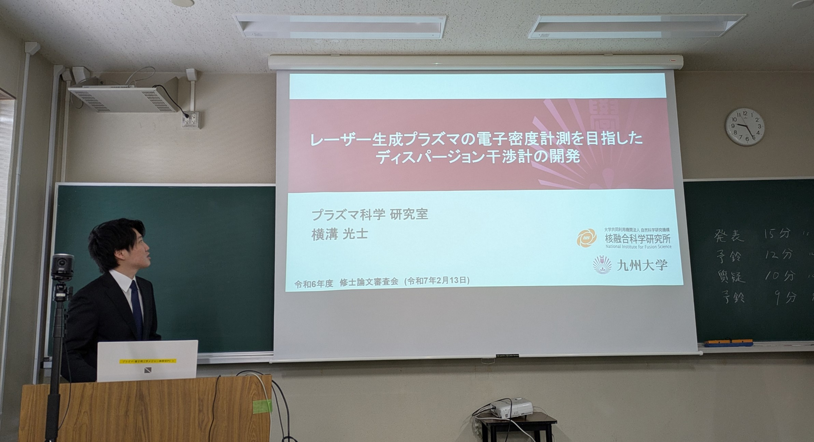
[January 2025]
- Mr. Sakai (D3) won the Best Poster Award at the Kyushu University Energy Week 2025!
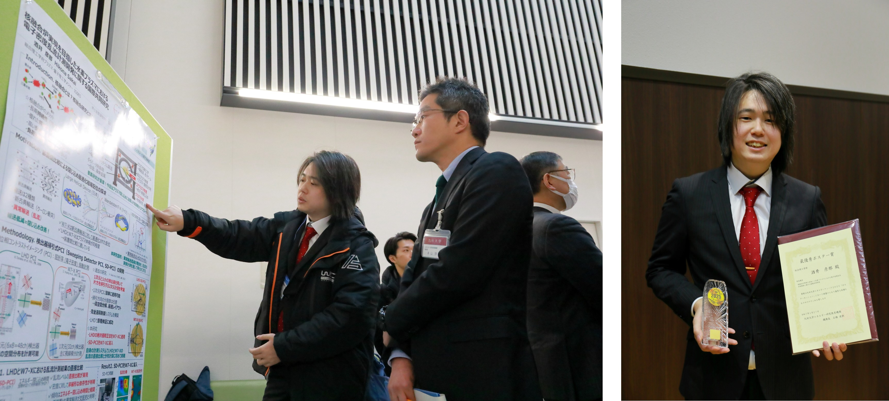
[December 2024]
- Prof. Tanaka gave an invited lecture titled "Development of Laser Phase Contrast Imaging for High-Temperature Plasma Turbulence Diagnostics" at the JSPF Kyushu-Okinawa-Yamaguchi Chapter Annual Meeting.
- Mr. Yokomizo (M2) gave an oral presentation at the same chapter annual meeting.
[November 2024]
- Prof. Tanaka visited Germany to participate in plasma experiments on the Wendelstein 7-X (W7-X) stellarator.
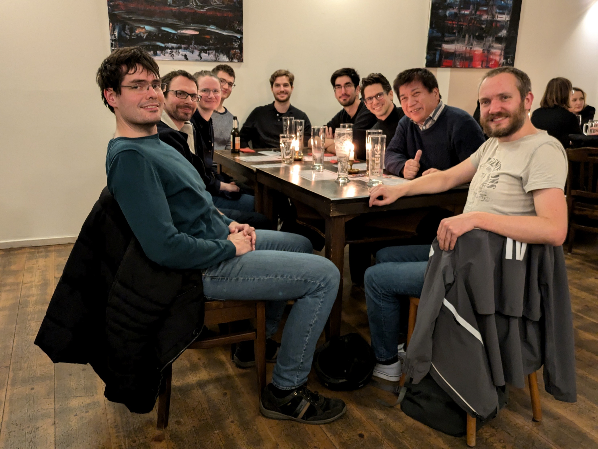
[September 2024]
- Prof. Tanaka gave an oral presentation at the 24th Coordinated Working Group Meeting.
- Prof. Tanaka gave an oral presentation at the 24th International Stellarator Heliotron Workshop (ISHW).
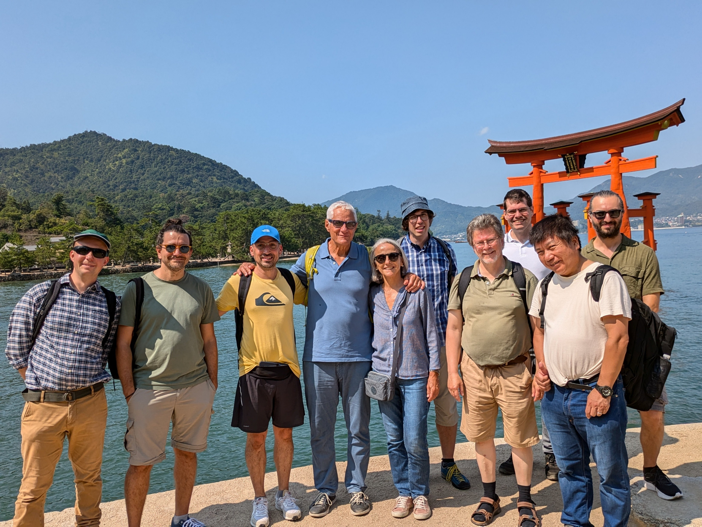
[August 2024]
- Prof. Tanaka visited the University of Wisconsin-Madison to facilitate the formal signing of a research collaboration agreement between NIFS and UW-Madison.
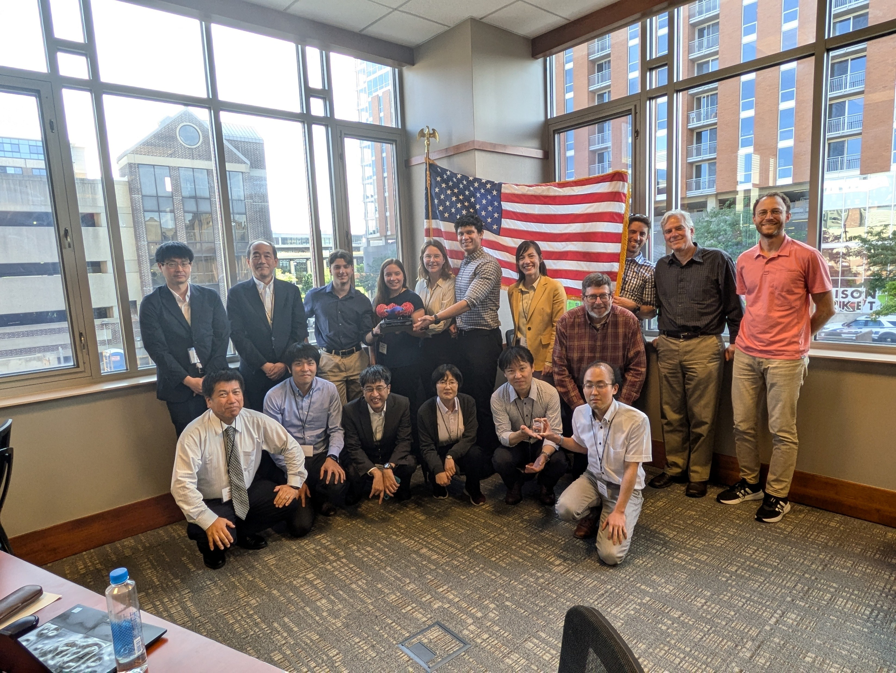
[July 2024]
- Mr. Sakai (D3) presented a poster at the European Physical Society Conference on Plasma Physics (EPS 2024) in Salamanca, Spain.
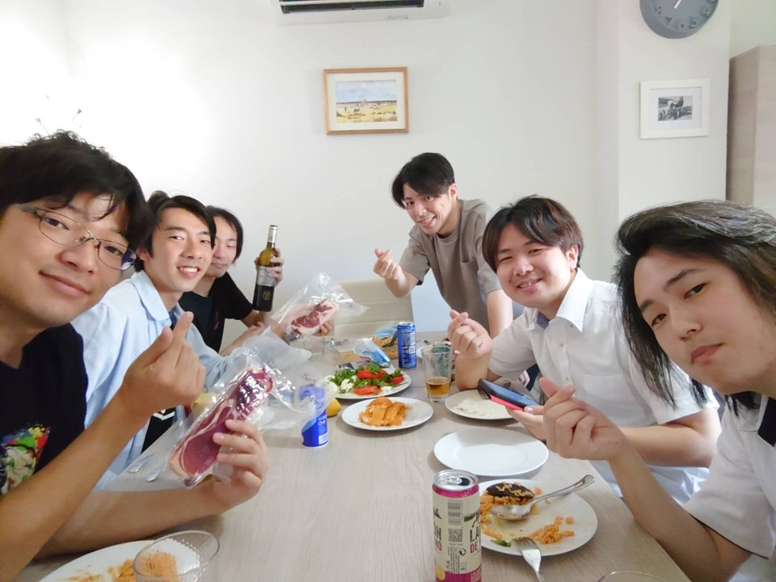
[May 2024]
- Prof. Tanaka delivered an oral report at the NIFS Research Unit Achievements Meeting.
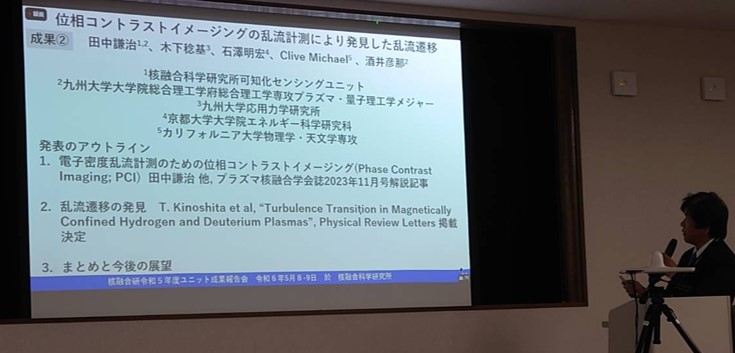
- Our laboratory organized an interactive exhibition booth at the Kyushu University Chikushi Campus Open Campus event.
[April 2024]
- Mr. Naoya Yoshihara joined our laboratory as a Master's program student.
- Prof. Tanaka delivered an invited lecture at the 13th Advanced Lasers and Photon Sources (ALPS 2024) international conference.
[March 2024]
- Mr. Sakai (D2) delivered both an oral and a poster presentation at the 26th Plasma Workshop for Young Scientists.
[January 2024]
- Mr. Sakai (D2) won the prestigious Best Presentation Award for Young Scientists (Student Session, Fusion Plasma Regime) at the 40th JSPF Annual Meeting!
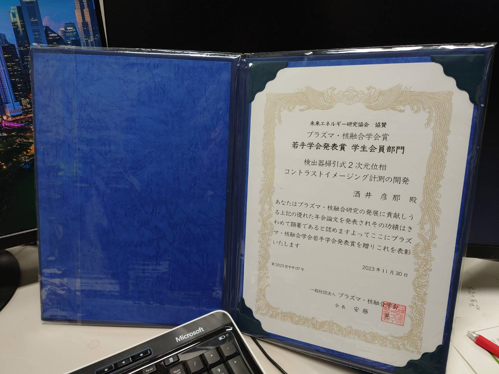
- Mr. Sakai (D2) presented a poster at the Kyushu University Energy Week 2024 and won the Outstanding Poster Award!
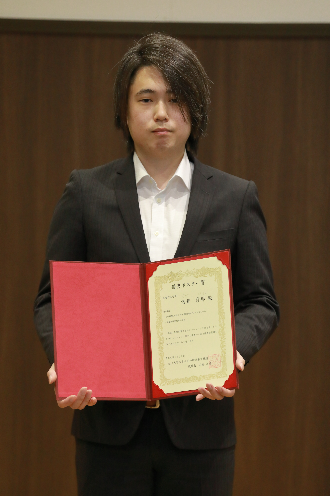
[December 2023]
- A peer-reviewed paper authored by Mr. Sakai (D2), titled "Development of sweeping detector phase contrast imaging in Large Helical Device," was formally published in the journal JINST.
- Mr. Sakai (D2) gave an oral presentation at the JSPF Kyushu-Okinawa-Yamaguchi Chapter 29th Annual Meeting.
- Prof. Tanaka and Mr. Sakai (D2) gave oral presentations at the Confinement and Transport Task Force Workshop.
- Members of the Tanaka Lab participated in the annual year-end (Bonenkai) party of the NIFS Visualizing Sensing Unit.
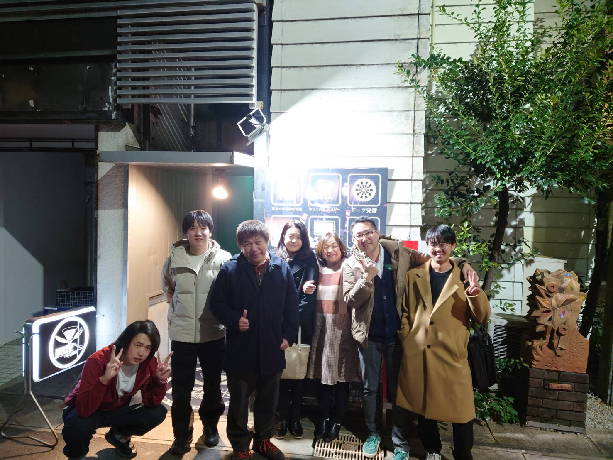
[November 2023]
- Prof. Tanaka and Mr. Sakai (D2) delivered oral presentations at the 40th JSPF Annual Meeting. Prof. Tanaka also contributed a poster session presentation.
[October 2023]
- Mr. Yokomizo (M1) relocated to Gifu and formally launched his research life at the NIFS facility.
- Prof. Tanaka contributed a poster presentation at the 29th IAEA Fusion Energy Conference (FEC 2023) in London, UK.
- Dr. Toshiki Kinoshita (Kyushu University Assistant Professor and Tanaka Lab alumnus) won the prestigious Excellent Poster Award at the 29th IAEA FEC!
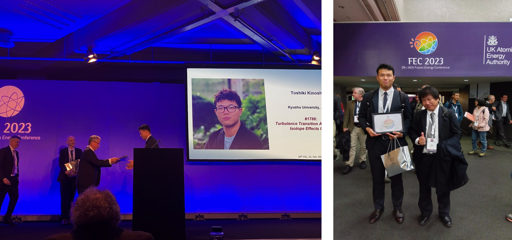
[September 2023]
- A peer-reviewed paper authored by Mr. Sakai (D2), titled "Observation of Interaction between Fast Ions and Turbulence in Large Helical Device," was published in the journal PFR.
- Mr. Sakai (D2) presented a poster at the 20th International Symposium on Laser-Aided Plasma Diagnostics (LAPD20) in Kyoto, Japan.
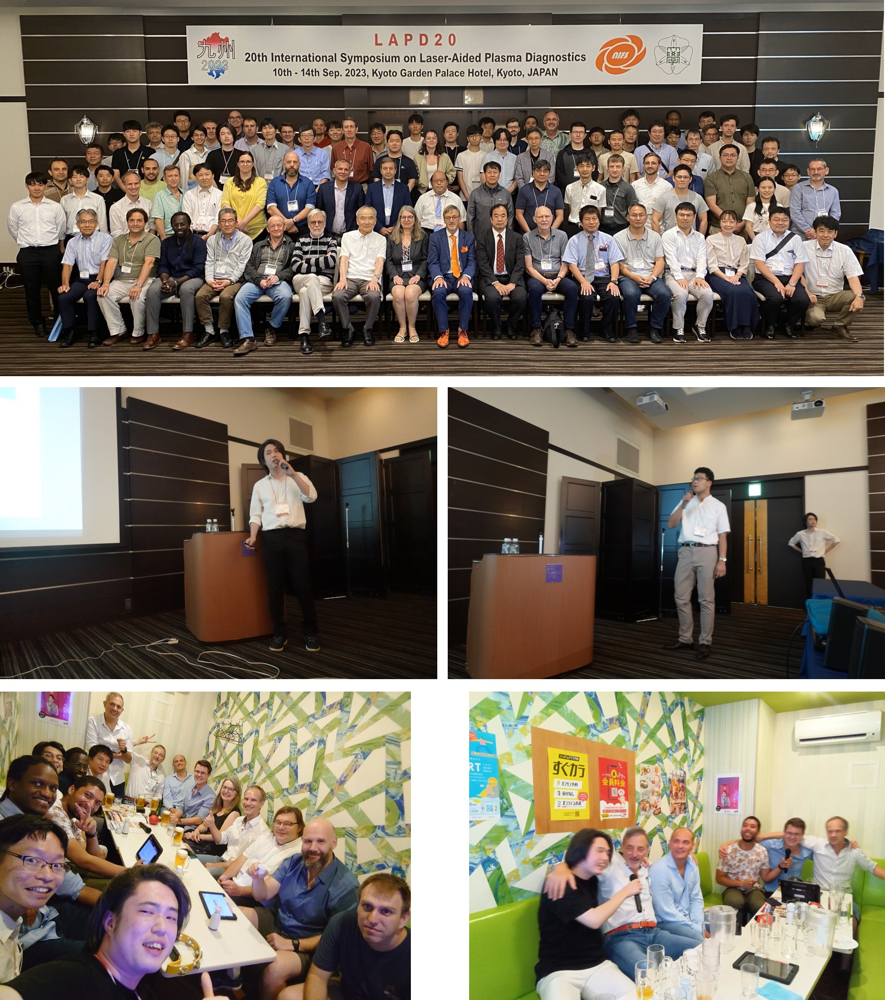
[August 2023]
- A peer-reviewed paper authored by Mr. Sakai (D2), titled "Application of Digital Phase Analysis to Far-Infrared Laser Interferometer for the Large Helical Device," was published in the journal PFR.
- We hosted an intensive laboratory course at Kyushu University. This hands-on curriculum placed heavy emphasis on experimental training, requiring students to work in teams to achieve the precise alignment of homodyne and heterodyne laser interferometer grids.
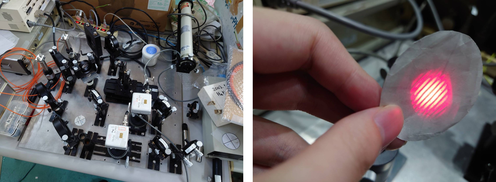
[May 2023]
- Our laboratory set up an interactive booth at the Kyushu University Chikushi Campus Open Campus event.
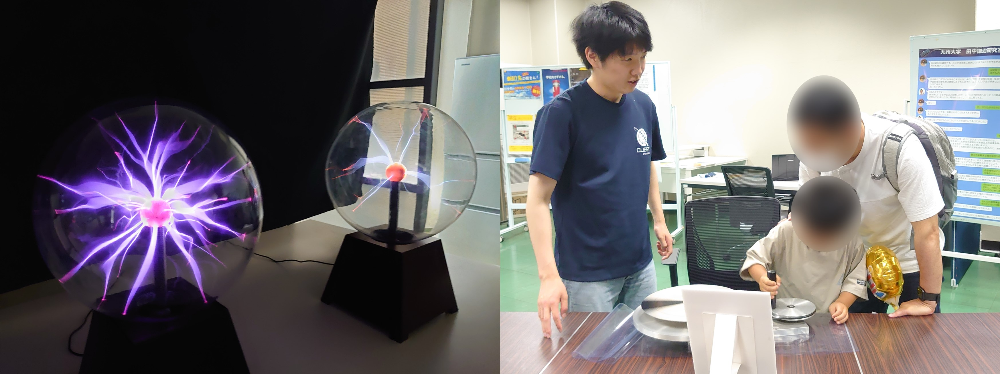
[April 2023]
- Mr. Koshi Yokomizo joined our laboratory as a Master's program student.
[March 2023]
・Prof. Tanaka and Mr. Sakai (D1) visited the Max Planck Institute for Plasma Physics (IPP) in Greifswald, Germany, to conduct collaborative experimental campaigns and diagnostic development.
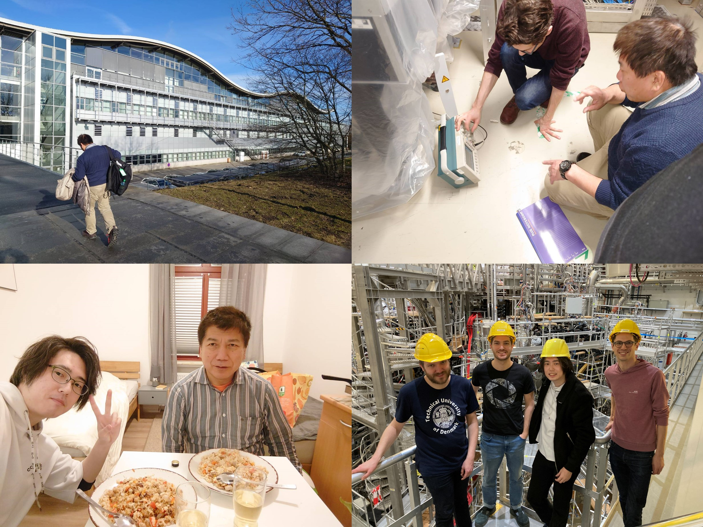
(Bottom Left) Prof. Tanaka kindly cooked an authentic fried rice for dinner—it was seasoned beautifully with soy sauce and tasted amazing! (Sakai). (Bottom Right) Mr. Sakai with members of the IPP PCI diagnostic group. He stayed in Germany completely on his own to manage the final week of operations.
・Prof. Tanaka visited the Joint European Torus (JET) facility in Culham, UK, to engage in joint experimental analysis and scientific modeling.
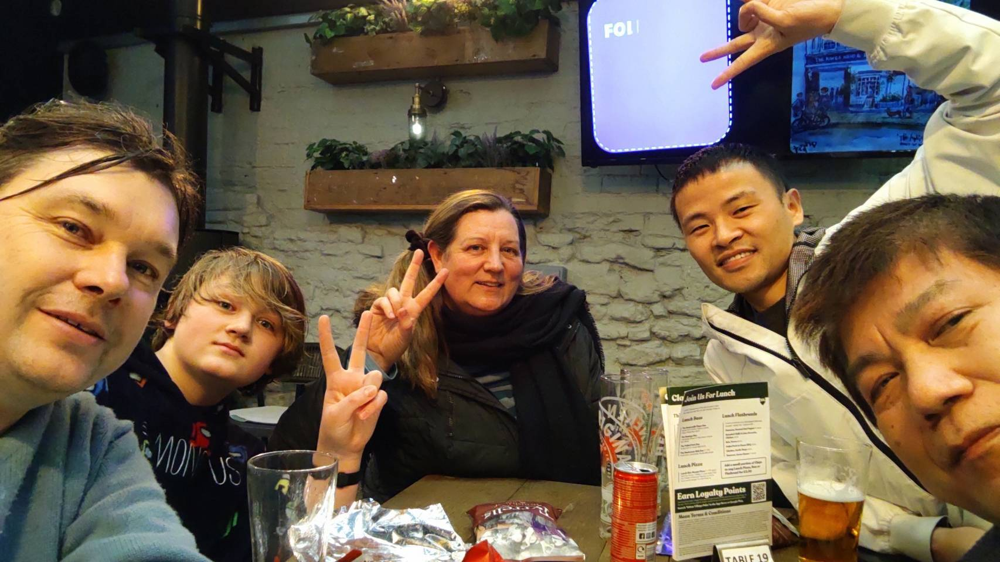
・Mr. Toshiki Kinoshita successfully completed his Doctoral program and received his Ph.D.!
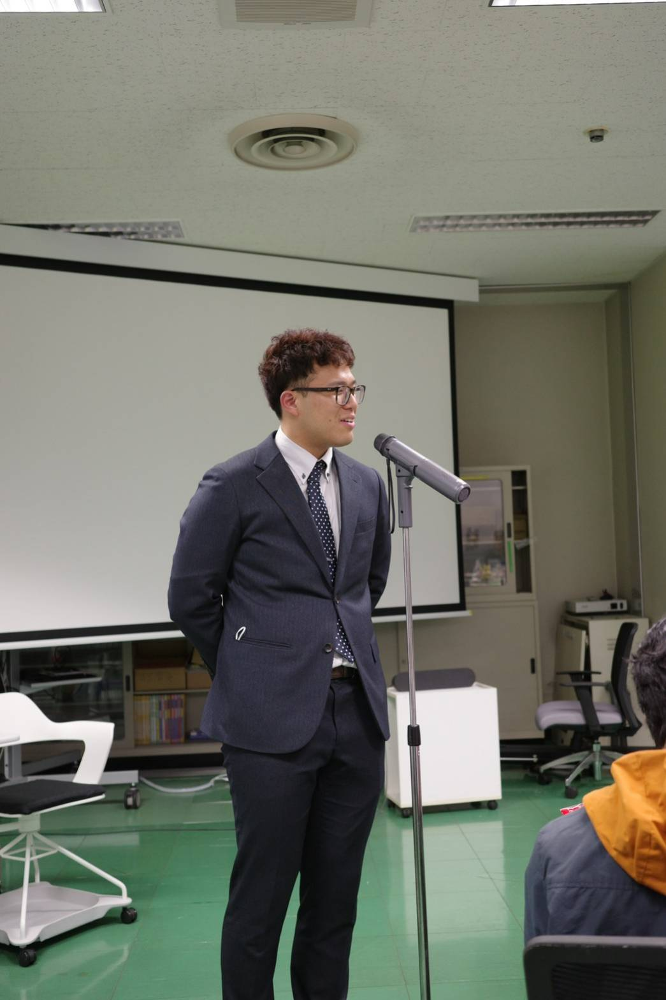
[February 2023]
・Mr. Kinoshita (D3) concluded his final day at the NIFS facility to move on to his next academic step.
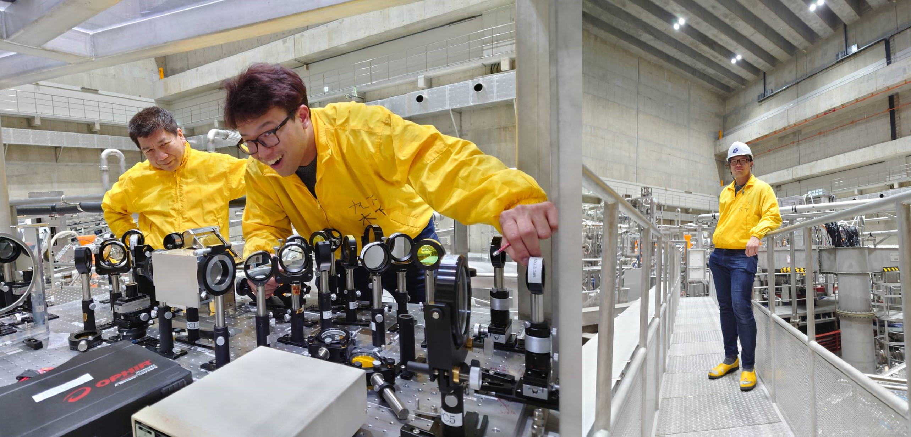
・Mr. Kinoshita (D3) delivered a stellar performance at his Ph.D. dissertation defense public hearing.
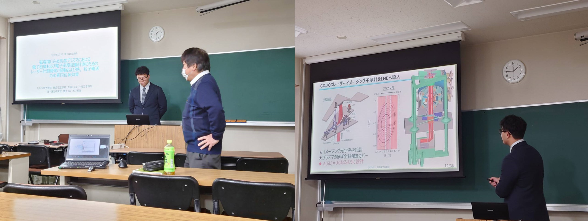
[January 2023]
・Mr. Sakai (D1) presented a poster at the Kyushu University Energy Week 2023 (EW2023).
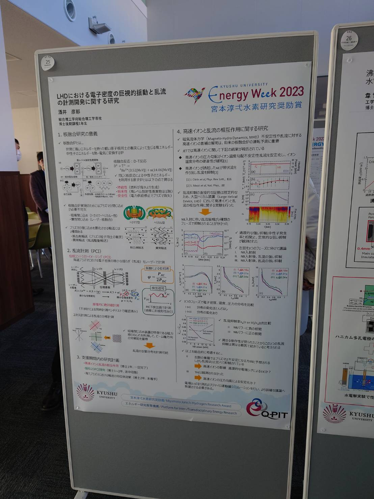
[December 2022]
・The LHD 24th experimental cycle has concluded, marking the final experimental campaign within the historical grand LHD project roadmap.
[November 2022]
・Mr. Sakai (D1) contributed poster presentations at both the 31st International Toki Conference (ITC31) and the 39th JSPF Annual Meeting.
[October 2022]
・The LHD 24th experimental cycle has officially commenced, launching the final experimental campaign of the LHD device.
[August 2022]
・We are performing intensive hardware maintenance and tuning on our diagnostic instruments ahead of the upcoming experimental cycle. This season requires extensive, hands-on field operations inside the main LHD torus hall.
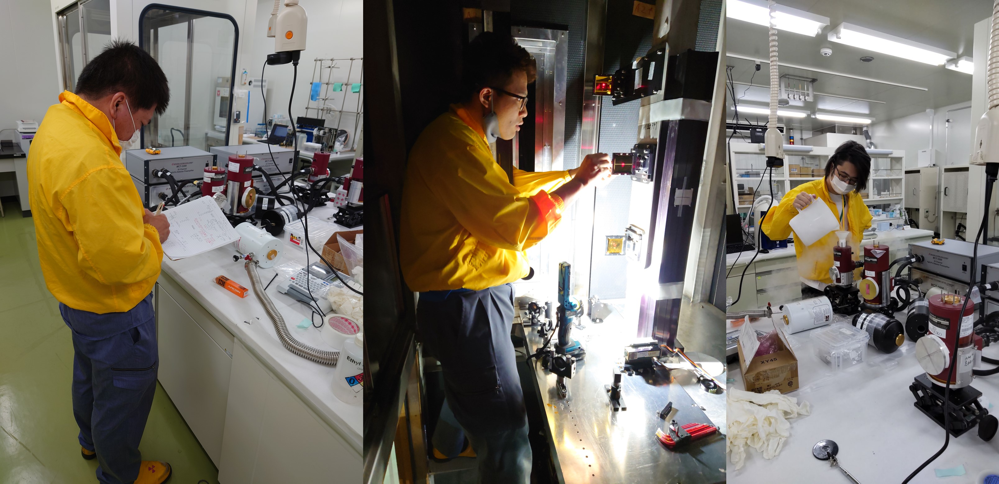
[July 2022]
・Mr. Kinoshita (D3) delivered an oral presentation at the European Physical Society Conference on Plasma Physics (EPS 2022).
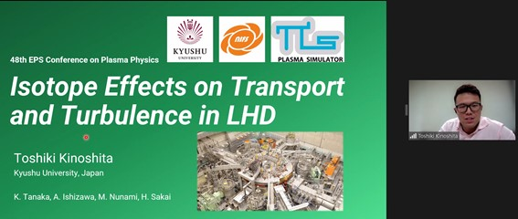
[June 2022]
・Prof. Tanaka delivered an invited lecture at the International Stellarator-Heliotron Workshop (ISHW 2022) in Warsaw, Poland.
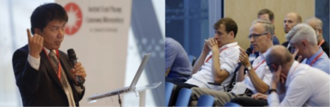
[May 2022]
・We hosted an evening research discussion meeting with Professor Ido and Technical Staff Member Kawano-san from the Research Institute for Applied Mechanics, Kyushu University.
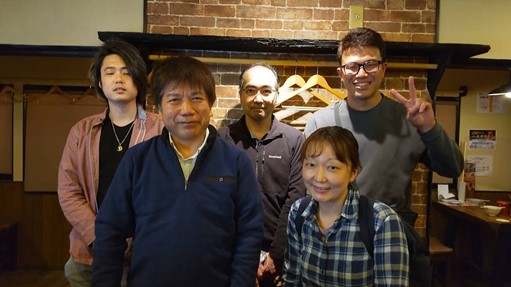
・Mr. Sakai (D1) won the prestigious Jun-ichi Miyamoto Hydrogen Research Incentive Award! This grand scholarship grants him a full tuition fee exemption for the entire 3 years of his Doctoral program.
・Our lab members introduced the Tanaka Lab and assisted with the QUEST device exhibition at the Kyushu University Chikushi Campus Open Campus event. We hope we inspired many visiting minds to explore plasma physics and look into NIFS and the Tanaka Lab!
[April 2022]
・Mr. Sakai (D1) was formally appointed as a NIFS Research Fellow.
[March 2022]
・Mr. Sakai (M2) successfully submitted his Master's thesis titled "Study on Diagnostic Development for Electronic Density Macroscopic Fluctuations and Turbulence in LHD" and won the prestigious Outstanding Department Award! He will continue his scientific career by advancing into our Doctoral program.
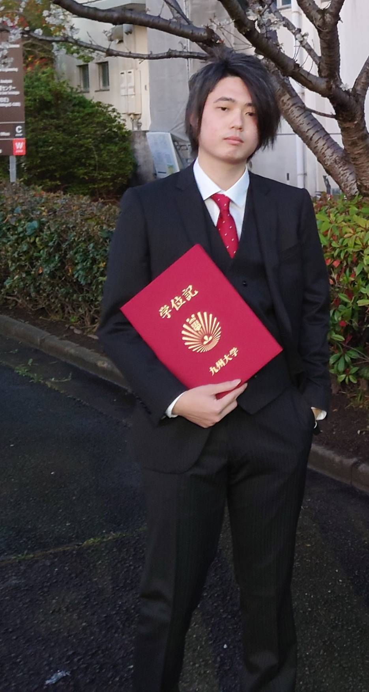
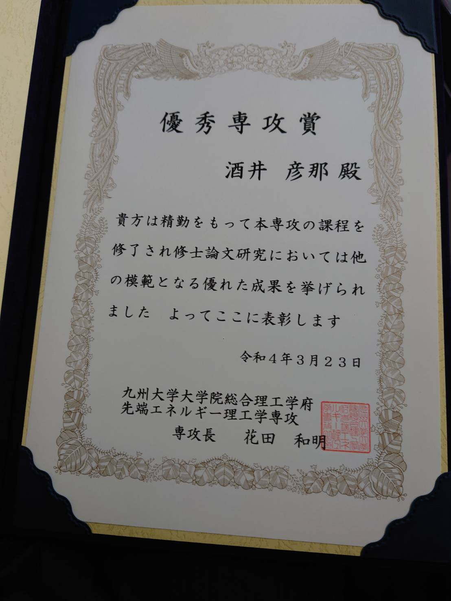
・Prof. Tanaka, alongside Associate Prof. Masahiro Kobayashi and Professor Katsumi Ida from NIFS, held a formal press conference titled "Shaking the Plasma Cage Lowers Thermal Load." This prominent physics breakthrough demonstrated for the first time that microscopic turbulence can be leveraged to reduce heat loads, utilizing the advanced turbulence diagnostics built by our laboratory.
[December 2021]
・Mr. Kinoshita (D2) gave an oral presentation titled "Impact of Turbulence Transition on Isotope Effects in LHD" at the JSPF Kyushu Chapter Annual Meeting.
・Mr. Sakai (M2) delivered an oral presentation titled "Introduction of a Digital Phase Analysis Methodology to the Far-Infrared Laser Interferometer on LHD" at the JSPF Kyushu Chapter Annual Meeting and won the prestigious Presentation Encouragement Award!
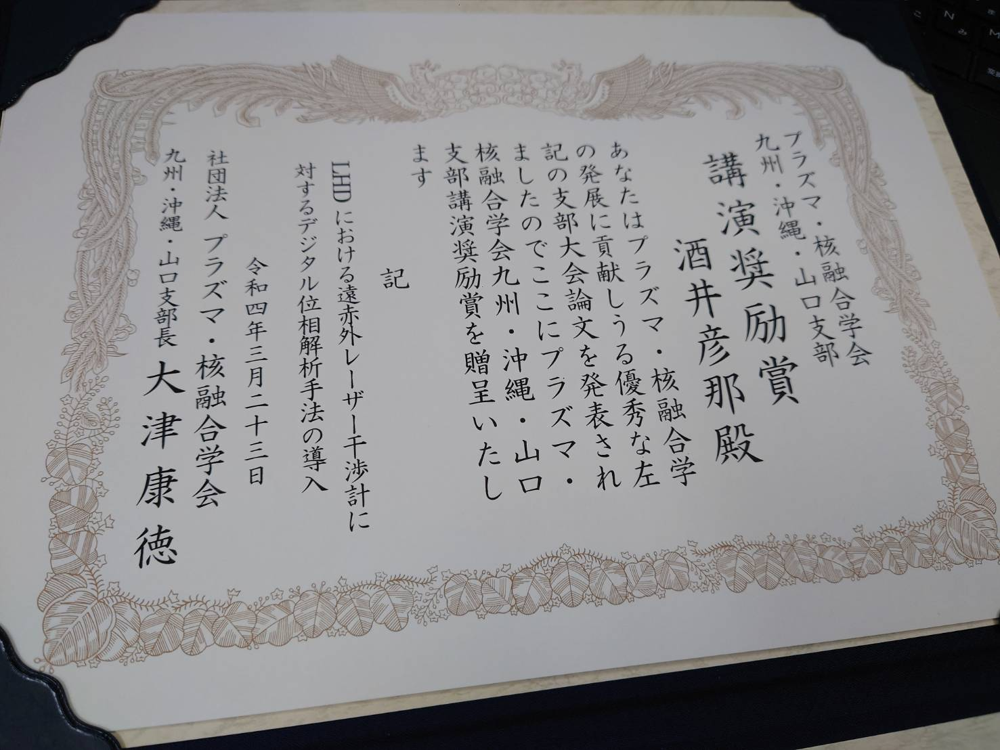
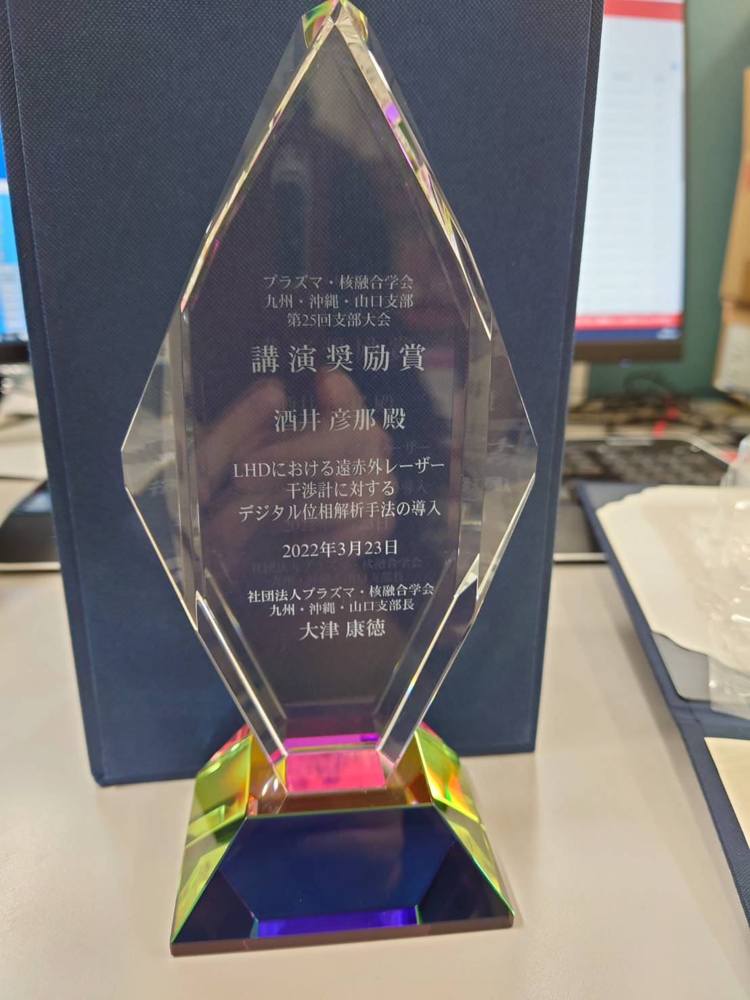
[November 2021]
・Prof. Tanaka, alongside Associate Prof. Numami from NIFS and Dr. Warmer from the Max Planck Institute for Plasma Physics, held a joint press conference titled "Crucial Impacts of Magnetic Configurations on Thermal Transport in Helical/Stellarator Systems." This prominent international comparative study between the LHD in Japan and the Wendelstein 7-X in Germany revealed for the first time that the helical configuration on the LHD is highly effective at suppressing micro-turbulence.
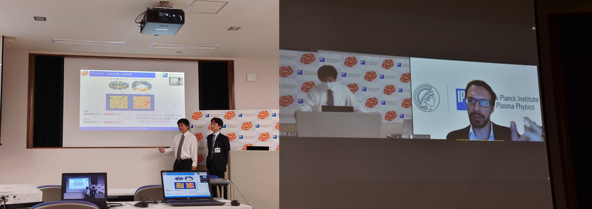
・Prof. Tanaka delivered an invited lecture titled "Investigations of Magnetic Configuration Effects on Turbulence Driven Transport from LHD and W7-X Comparison Experiments" at the 30th International Toki Conference (ITC30).
・Mr. Kinoshita (D2) delivered an oral presentation titled "Observation of turbulence transition in LHD" at ITC30.
・Mr. Sakai (M2) delivered an oral presentation titled "Development of phase contrast imaging using 1.06um YAG laser for micro-turbulence measurements" at ITC30.
[September 2021]
・Prof. Tanaka contributed a poster presentation titled "Isotope effects on particle transport in TCV ohmic discharge" at the 25th Joint EU-US Transport Task Force Meeting.
[July 2021]
・Mr. Kinoshita (D2) gave an oral presentation titled "Hydrogen isotope effect on multi-scale turbulence and its role on transport in Large Helical Device" at the 5th Asia-Pacific Conference on Plasma Physics (AAPPS-DPP 2021).
[April 2021]
・The research proposal led by Prof. Tanaka, titled "New Horizons in Turbulence-Driven Transport Studies Using Advanced Laser Diagnostics Under Fusion Reactor-Equivalent Conditions," was successfully awarded a prestigious Grant-in-Aid for Scientific Research (A) (Kakenhi 基盤A)!
・Prof. Tanaka delivered a prominent keynote lecture titled "Isotope effects on transport in LHD" at the US Transport Task Force Meeting.
・Mr. Kinoshita (D2) was formally selected for the highly competitive JSPS Research Fellowship for Young Scientists (DC2).
[March 2021]
・Mr. Shun Adachi successfully completed his Master's program degree. He will launch his professional career at Hitachi, where he will be directly involved in engineering neutral beam injection (NBI) systems for fusion applications.
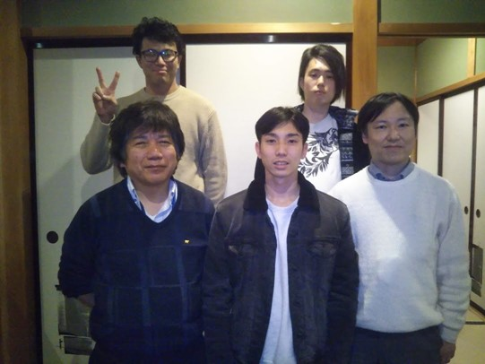
・Prof. Tanaka successfully returned to Japan after completing his tenure as a Visiting Professor at the Swiss Federal Institute of Technology in Lausanne (EPFL) in Switzerland, where he led hydrogen isotope particle transport experiments on the TCV tokamak.
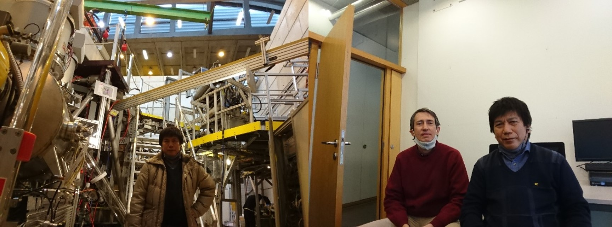
・Mr. Sakai (M1) delivered an oral presentation titled "Development of a Phase Contrast Imaging Diagnostic Methodology Utilizing a 1.06um YAG Laser for Micro-Turbulence Measurements" at the Physical Society of Japan (JPS) 76th Annual Meeting.
[September 2020]
・Prof. Tanaka traveled to Switzerland to take up his formal appointment as a Visiting Professor at EPFL.
[March 2020]
・Mr. Toshiki Kinoshita successfully completed his Master's program degree and won the prestigious Best Student Award! He will continue his research by advancing into our Doctoral program.
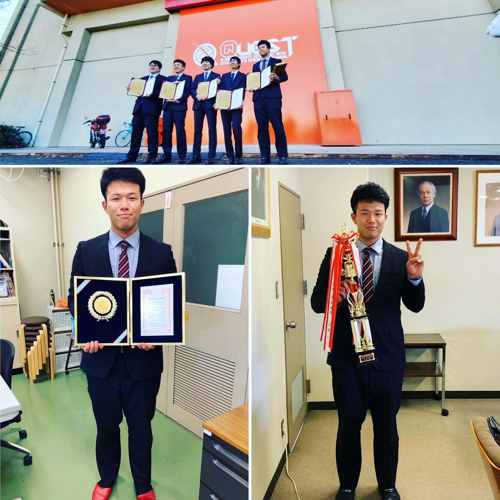
[November 2019]
・Prof. Tanaka traveled to the UK to participate in specialized experimental campaigns at the Joint European Torus (JET) facility.
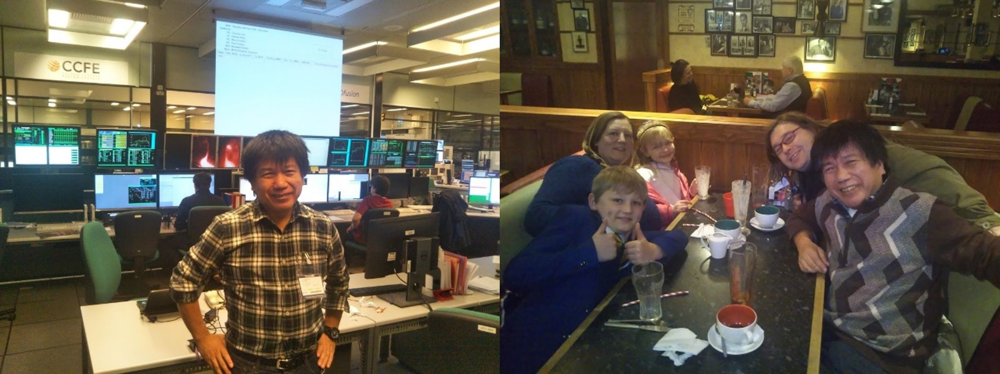
[September 2019]
・Dr. Clive Michael, who played an invaluable role in constructing our initial $\text{CO}_2$ laser diagnostic systems at NIFS from 2005 to 2008, visited the institute. He currently conducts advanced fusion research at UCLA and works extensively on the MAST-U device in the UK.
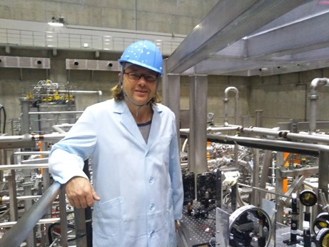
[August 2019]
・The NIFS diagnostics project group hosted its traditional annual summer BBQ party.
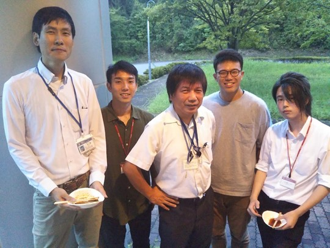
[July 2019]
・Prof. Tanaka delivered an invited lecture at the European Physical Society Conference on Plasma Physics (EPS 2019) in Milan, Italy.
[March 2019]
・Mr. Takumi Maki successfully completed his Master's program degree. He will launch his professional career at NTT Docomo, focusing on advanced telecommunication network architecture.
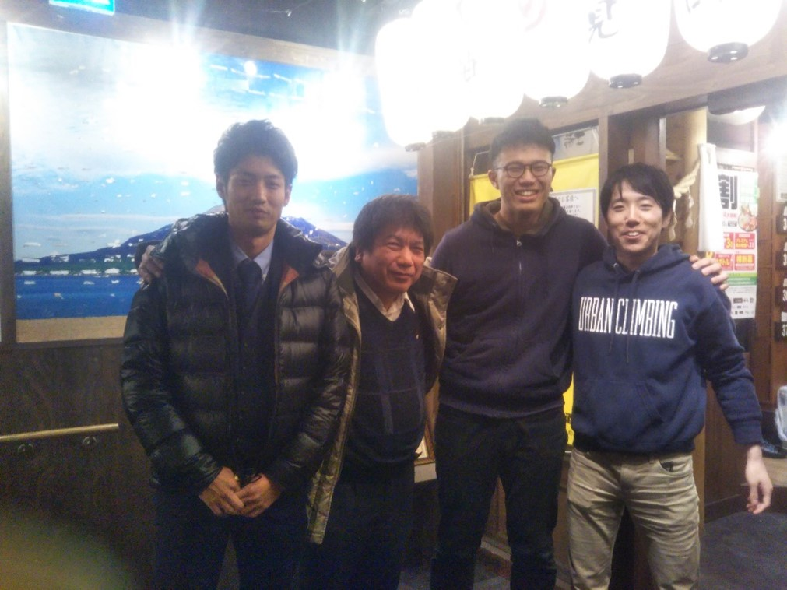
[February 2018]
・Professor Tony Donné, the Program Manager and leader of EUROfusion, visited the NIFS facility. Professor Donné is himself a world-renowned authority on laser diagnostics.
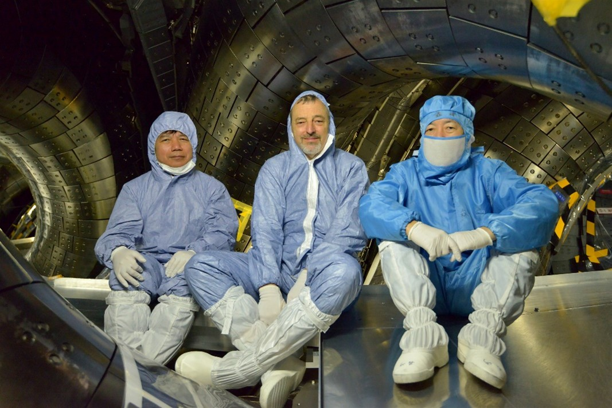
[March 2017]
・Mr. Shota Takeshida successfully completed his Master's program degree.
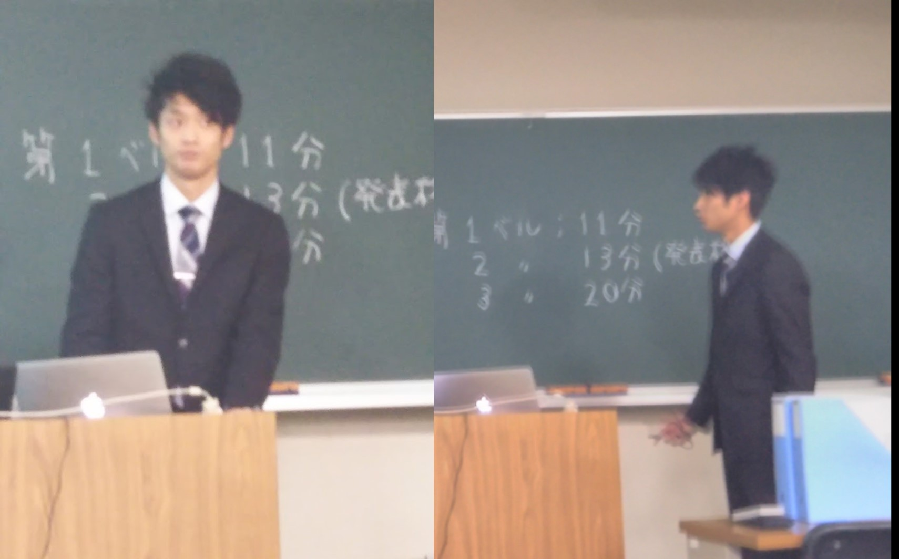